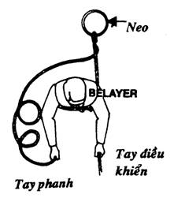
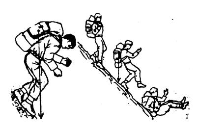
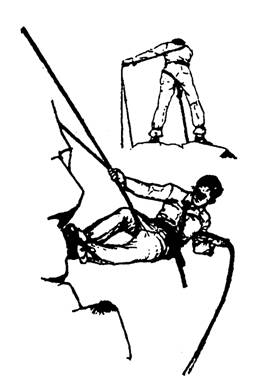
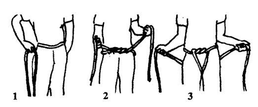
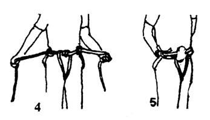
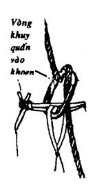
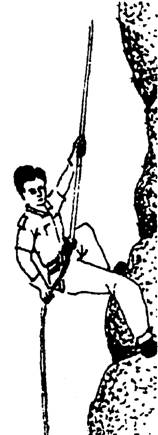

LÊN DỐC
Khi lên dốc, các bạn phải sử dụng sức nhiều, nên rất dễ bị mệt, vì vậy, các bạn cần lưu ý những điều sau:
- Chọn một đôi giầy tốt, vừa chân, có độ bám cao, sẽ giúp các bạn đắc lực khi leo núi.
- Giữ cho hơi thở điều hoà, nếu thở nhanh hay hổn hển có nghĩa là các bạn đã đi quá sức, hãy tạm nghỉ chừng 5 – 10 phút (không nên nghỉ lâu, vì bắp thịt sẽ bị lạnh và giãn cơ, gây đau nhức do bị phản ứng).
- Nếu dốc núi hơi lài, thì với một cây gậy chống, các bạn cứ thong thả mà đi lên. Mỗi lần đặt chân lên một cục đá, nên ướm thử độ bám cũng như độ kết cấu của nó.
- Nếu dốc hơi đứng thì các bạn men theo triền để đi lên theo hình chữ Z, cộng với sự hỗ trợ của hai tay bám vào các mô đá, cành cây, khe đá, thân cây…
- Nếu dốc quá đứng hay vách đá bụôc phải dùng dây, thì cử một hay hai người hỗ trợ (Belayer) là những người khoẻ mạnh, leo núi giỏi, trang bị gọn nhẹ leo lên trước, cột dây neo vào một điểm chịu chắc chắn. Những người nầy có nhiệm vụ thâu dần sợi dây theo từng bứơc leo của các bạn, giữ chặt dây khi các bạn bị trượt té, cảnh báo những nguy hiểm có thể xảy ra.

- Những người còn lại, từng người một, sẽ dùng đầu dây làm thành một nút ghế đơn (hay ghế kép, nếu là dây đôi), quàng vào ngang ngực. Dùng hai tay để bám víu, hai chân tìm điểm tựa để làm bàn đạp, rồi cùng với sự giúp sức của người hỗ trợ, các bạn sẽ leo lên. (Xin xem phần LEO VÁCH ĐÁ)
- Người sau cùng, trước khi leo lên, phải kiểm tra lại tất cả hành lý và dụng cụ mang theo còn sót, cột lại cho các bạn của mình kéo hết lên trước, rồi mình mới leo lên.
XUỐNG DỐC
Khác với lúc leo lên, xuống núi tuy ít mệt hơn, nhưng lại nguy hiểm không kém, hơn nữa, lúc nầy chân cẳng của các bạn đã rã rời, sau khi leo qua những quãng dốc dài. Khi xuống núi, các bạn cần phải cẩn thận, không nên đi quá nhanh (cho dù trọng lượng của cơ thể và hành lý như đẩy các bạn chạy về phía trước), vì các bạn rất dễ bị vấp té, lăn lông lốc xuống dưới.
Khi xuống dốc, khom người và rùn đầu gối lại, giữ cho ba lô ổn định, và cân đối trên lưng của các bạn, trọng tâm của ba lô nằm phía trước chân đế, chịu cả bàn chân xuống mặt đất. Nếu đi thẳng người, trọng tâm balô sẽ nằm phía sau chân đế, dễ bị trượt té.

Nếu dốc khá đứng, thì các bạn xoay người lại đối diện với vách núi, sử dụng luôn cả hai tay để bám chịu mà leo xuống. Khi leo xuống, lúc nào cơ thể các bạn cũng phải chịu trên 3 điểm tựa, một tay với hai chân hay một chân với hai tay. Sử dụng tay hay chân còn lại để tìm điểm tựa thấp hơn. Khi đặt tay hay chân vào điểm tựa mới, phải ướm thử sức chịu đựng trước khi tì cả sức nặng của mình lên đó.
TUỘT DÂY XUỐNG NÚI
Nếu gặp vách núi dựng đứng, thì các bạn nên dùng dây để tuột xuống, vừa nhanh chóng vừa an toàn và tiện lợi. Có nhiều cách tuột dây xuống núi, sau đây là những cách đơn giản và dễ thực hiện hơn cả:
Cách thứ nhất:
Các bạn chỉ cần có một sợi dây đủ chắc chắn mà không cần thêm phụ tùng nào cả. Hãy thực hiện theo từng bước sau:
- Choàng dây qua một gốc cây hay một gộp đá chắc chắn làm điểm neo chịu, rồi chập đôi dây lại.
- Luồn dây qua háng (từ trước ra sau)
- Vòng qua hông trái (nếu thuận tay mặt, hoặc ngược lại)
- Vắt chéo lên vai phải, vòng ra sau lưng
- Lòn trong nách trái rồi nắm giữ dây lại bằng tay trái.

- Tay mặt (là tay điều khiển) nắm lấy dây phía trước mặt để giữ thăng bằng. Nghiêng người gần thẳng góc với vách núi.
- Tay trái (là tay phanh) thả từng đoạn dây ngắn, vừa thả vừa đi chậm chậm xuống theo vách núi.
- Khi mọi người xuống hết, rút một đầu dây để thu hồi sợi dây.
Cách thứ hai:
Cách nầy đòi hỏi các bạn phải có một số dụng cụ cần thiết như:
- Một cuộn dây dài và chắc
- Mỗi người một sợi dây ngắn chừng 3 mét, một đôi găng tay dầy, một khoen bầu dục (carabiner)
THỰC HIỆN
Trước tiên, các bạn dùng đoạn dây 3 mét thắt một cái đai theo cách hướng dẫn sau:
1- Gập đôi sợi dây lại, đặt chỗ gập cố định bên hông trái (nếu thuận tay mặt, hay ngược lại). (Trong hình minh hoạ thì đặt bên mặt)
2- Vòng dây qua người làm một vòng khoá trước bụng
3- Lòn xuống dưới háng rồi kéo lên hai bên hông

4- Quấn hai đầu dây một vòng vào hai bên hông.
5- Vòng hai đầu dây qua hông trái (nếu thuận tay mặt…) và cột lại bằng nút dẹt. Móc khoen bầu dục vào.

• Cột cố định đầu sợi dây dùng để tuột vào gốc cây hay một điểm thật chắc chắn.
• Làm một vòng khuy tròng vào khoen bầu dục.

• Tay trái (là tay hướng dẫn) nắm lỏng sợi dây phía trước mặt để giữ thăng bằng.
• Tay phải (là tay phanh) giữ phần dây thòng xuống, vắt qua hông phải. Tay nầy dùng để điều chỉnh tốc độ.
• Muốn tuột xuống, các bạn nới lỏng dây ở tay phải ra. Muốn dừng lại, các bạn nắm chặt dây ở tay phải lại, đồng thời áp sát dây vào mông (tay trái luôn luôn nắm lỏng dây)
• Nếu người của các bạn không chạm vào vách đá (treo tòn ten) thì các bạn có thể tuột một đoạn thật dài (nhưng phải coi chừng găng tay chịu không nổi).
